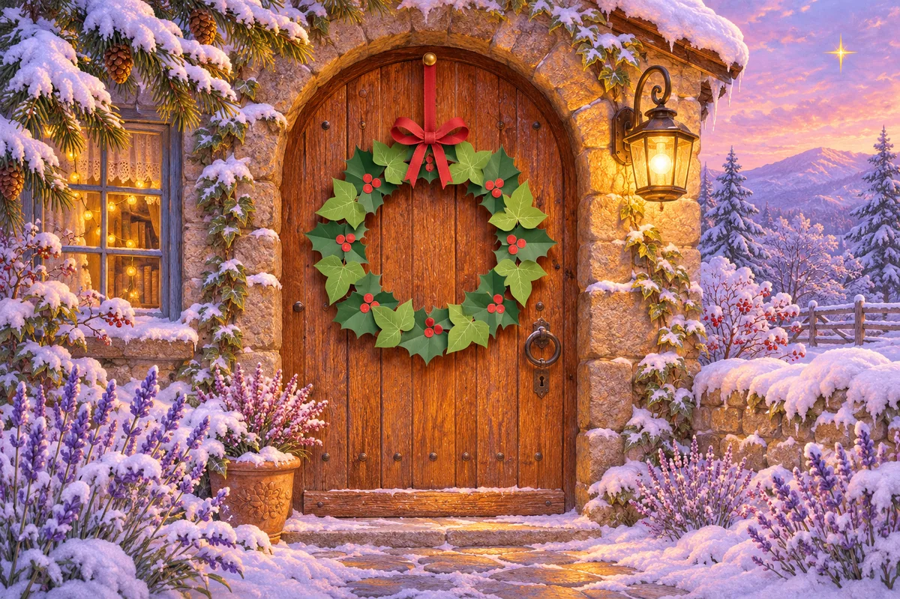

Rituales de temporada · 25 de noviembre de 2026
Yule 2026: qué es, cuándo es y cómo celebrarlo en casa
La noche más larga del año y, justo después, la luz que vuelve. Yule celebra el solsticio de invierno: en 2026 llega el lunes 21 de diciembre a las 21:50, hora peninsular, con una luna creciente que se llena en Nochebuena. Qué es, de dónde viene y siete gestos sencillos para vivirlo en casa. No hace falta ser bruja.
Qué es Yule
Yule es la fiesta del solsticio de invierno en la Wicca y en buena parte del paganismo actual. Es una de las ocho fiestas de la Rueda del Año, el calendario que sigue las estaciones: llega siete semanas después de Samhain y abre la mitad del año en que los días vuelven a crecer.
Su imagen es la luz que regresa. Y tiene su gracia, porque el invierno acaba de empezar y quedan casi tres meses hasta la primavera. Lo que se celebra es un cambio diminuto: el día 22 tiene un segundo más de luz que el 21, y a primeros de enero, unos seis minutos. Nadie lo nota la primera semana. Por eso basta una lámpara en la ventana.
Solsticio viene del latín solstitium, «sol quieto»: durante unos días el sol parece detenerse en lo más bajo de su recorrido antes de empezar a subir. Eso es lo que celebramos. Para hacerlo no necesitas un altar ni comprar nada: una luz, algo verde y un rato para mirar de frente la noche más larga.
Cuándo es Yule 2026: fecha y hora del solsticio
- Hemisferio norteLunes 21 de diciembre de 2026, a las 21:50 en la España peninsular y Baleares. En Canarias, las 20:50; en Ciudad de México y Centroamérica, las 14:50; en Bogotá, Panamá y La Habana, las 15:50; en Caracas, Santo Domingo y San Juan, las 16:50 (20:50 UTC).
- El cieloEn ese mismo instante el Sol entra en Capricornio y empieza el invierno astrológico. La Luna, creciente e iluminada en un 93 %, está terminando su paso por Tauro y entra en Géminis a las 23:28, hora peninsular. Se llena dos noches después, en la madrugada de Nochebuena: jueves 24, a las 02:28 en España. Crece la luna y empiezan a crecer los días.
- Hemisferio surLunes 21 de junio de 2027, a las 14:10 UTC. Al sur del ecuador, Yule llega en junio, con el invierno: en Buenos Aires y Montevideo serán las 11:10; en Santiago de Chile, las 10:10; en Lima, las 9:10.
El Observatorio Astronómico Nacional fija el comienzo del invierno de 2026 a las 21:50, hora peninsular. Ese lunes, Madrid tendrá 9 horas y 17 minutos de luz: el día más corto del año. El solsticio es un instante, pero la fiesta no: muchas lo celebramos al caer la tarde del 21, otras la víspera o el fin de semana más cercano.
Si vives al sur del ecuador, el 21 de diciembre es tu noche más corta: lo que toca entonces es Litha, la fiesta del verano, y Yule te espera en junio. Hay quien sigue su estación y quien mantiene las costumbres de diciembre de su familia. Las dos cosas caben.
De dónde viene Yule: historia y celebraciones actuales
El nombre Yule está emparentado con jól, asociado a fiestas invernales de pueblos germánicos y nórdicos. Las fuentes medievales hablan de reuniones, banquetes y brindis. No permiten reconstruir una celebración idéntica en todos los lugares, ni situar todas sus variantes antiguas en nuestro 21 de diciembre.
La saga de Hákon el Bueno, que Snorri Sturluson escribió hacia 1230, cuenta que el rey trasladó el jól para que coincidiera con la Navidad cristiana. Se escribió casi tres siglos después de los hechos, así que nos dice más de cómo lo recordaban los islandeses del siglo XIII que de lo que hacía cada familia nórdica.
También la Rueda del Año tiene su historia. El calendario de ocho fiestas, tal como lo celebramos, se fijó en el paganismo británico de mediados del siglo XX, uniendo fiestas célticas y germánicas con los solsticios y los equinoccios. Por eso llamar a Yule «la Navidad celta original» no es exacto: el nombre es germánico y la fiesta, tal como la vivimos, es moderna, aunque beba de costumbres muy antiguas.
Los siete gestos de más abajo salen de lo que se repite en casi todas las fiestas de invierno: el fuego del hogar, el verde que no se seca, la comida compartida y la luz. Los hemos traído a una casa de hoy, con papel y luces LED, y lo decimos tal cual: son nuestra versión, no una reconstrucción.
Símbolos de Yule: tronco, acebo, muérdago y luz
- El tronco
- Durante siglos, en muchas casas de Europa se elegía un tronco grande para que ardiera en el hogar durante las fiestas. English Heritage lo documenta en la Inglaterra de los primeros Estuardo, a comienzos del siglo XVII, y en España sigue vivo en el tió catalán y la tronca aragonesa. Hoy no hace falta quemarlo: un tronco con luces en la mesa conserva el calor de la idea.
- El acebo y las hojas perennes
- Cuando el bosque se queda desnudo, el acebo y la hiedra siguen verdes, y por eso llevan siglos entrando en casa en pleno invierno: ya aparecen en registros navideños ingleses de finales de la Edad Media. En la Wicca, el Rey Acebo gobierna la mitad del año en que los días menguan y en Yule cede el paso al Rey Roble. De papel duran varios inviernos y no son tóxicos.
- El muérdago
- Plinio cuenta que los druidas de la Galia lo cortaban de los robles con una hoz de oro el sexto día de la luna. No lo relaciona con el solsticio: lo de colgarlo en la puerta por Navidad llegó muchos siglos después. Hoy lo colgamos como lo que es, una bienvenida.
- Las velas y la luz que vuelve
- Cada luz que se enciende en Yule es un pequeño sol. Con una basta, encendida al anochecer del 21. Si te gusta trabajar con colores, el dorado y el blanco son los del sol que vuelve; el rojo y el verde, los de la fiesta.

Cómo celebrar Yule en casa: siete gestos concretos
Elige uno o hazlos todos. Caben en una tarde, o puedes ir montando un rincón a lo largo de la semana y dejarlo listo para la noche del 21.
Prepara un centro con piñas
Un plato ancho, tres piñas limpias y secas, unas hojas de papel verde. Nada más. La piña guarda las semillas del pino durante todo el invierno: es la estación fría con la promesa dentro. Deja sitio para la cena y para ver a quien se siente enfrente. Si las buscas en el campo, recoge solo las que ya están en el suelo.
Da un lugar al tronco de Yule
Una pieza de madera estable y sin astillas, o un rollo de cartón marrón si no tienes. Ponla en una bandeja con una luz LED al lado, sin taladrar ni quemar nada. Siéntate cerca y piensa en un invierno que recuerdes con cariño. ¿Qué te gustaría repetir este año? Una receta, una canción, una persona a la que llamar.
Haz una corona de hoja perenne
Recorta un aro de cartón y cúbrelo de hojas de papel, alternando hiedra y acebo, con unas bayas rojas pintadas. Cuélgala con un cordel corto, lejos de radiadores. Un círculo no tiene principio ni final, como la Rueda del Año. Guárdala en enero: el invierno que viene solo tendrás que repasarla.
Cuelga un pequeño muérdago de papel
Dibuja dos ramitas de hojas ovaladas, con puntos blancos para las bayas, y únelas por la base. Cuélgalas en una puerta de dentro de casa. Es un adorno de bienvenida: quien pase por debajo recibe una taza caliente o un «me alegra que estés aquí». Lo del beso, que lo decida cada cual.
Enciende la vela de la noche más larga
Al caer la tarde del 21, apaga las lámparas y enciende una sola luz LED donde la veas desde tu sitio. Deja el móvil en otra habitación. En Madrid ese día anochece a las 17:51 y el sol no vuelve hasta las 8:35: quédate un rato con esa oscuridad, sabiendo que a partir de mañana empieza a ceder. Si prefieres una vela de verdad, ponla en un portavelas estable e incombustible, lejos de los adornos, y apágala antes de salir, dormir o empezar una meditación.
Comparte algo caliente
Una sopa, unas manzanas asadas con canela, una bebida caliente de las tuyas. Las fiestas de jól eran, ante todo, banquetes y brindis; la tuya puede ser una mesa pequeña. Si sois varias, que cada una traiga algo de comer y una historia del año. Si lo celebras sola, pon la mesa bonita para ti: un plato, una luz, tu música.
Sal a buscar la luz del día
En los días de después, sal a dar un paseo o asómate a la misma ventana a la misma hora. Fíjate en una sombra, en una rama, en dónde cae el sol, y vuelve una semana más tarde para comparar. Mira sobre todo la tarde: en España el sol ya se pone cada día un poco más tarde desde la primera quincena de diciembre, mientras que por la mañana seguirá saliendo más tarde hasta la primera semana de enero. La luz vuelve primero por la tarde.
Junto a papel, piñas, ramas o madera, utiliza solo LED. Mantén pilas y piezas pequeñas fuera del alcance de menores y animales. El acebo y el muérdago de verdad son tóxicos si se comen, también para gatos y perros: por eso aquí los hacemos de papel.

Tu celebración puede empezar con un solo gesto
No hay que hacerlo todo. Quédate con la luz si es lo único que te apetece, o con la cena, y deja la corona para otro año. La luz vuelve despacio, y Yule se puede celebrar al mismo ritmo.